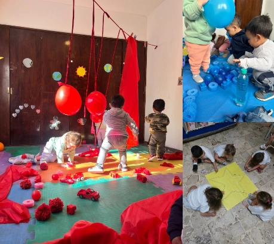

Aprendizaje lúdico
El juego es la principal herramienta de aprendizaje en la primera infancia. A través de propuestas lúdicas, los niños y niñas exploran, descubren, experimentan y construyen conocimientos de manera natural y significativa. El juego favorece la curiosidad, la imaginación y el desarrollo de habilidades sociales, cognitivas y emocionales.